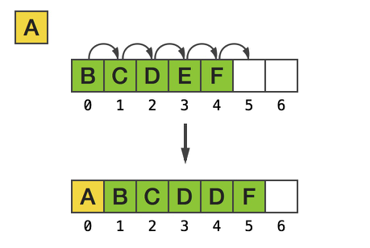
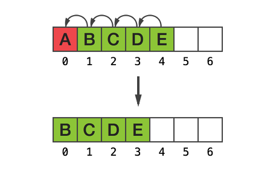

Массив это один из самых часто используемых типов данных, поэтому важно понимать как он устроен.
В классическом представлении массив это непрерывный кусок памяти, который частично или полностью заполнен данными. В языке С мы можем выделять память с помощью функции malloc:
char *p = malloc(4); // allocates enough for an array of 4 bytes
for(int n=0; n<4; ++n) // populate the array with a,b,c,d values
p[n] = ‘a’+n;
printf("%c \n", p[3]);
Переменная p, содержит адрес нулевого байта массива, тогда p+1 – это адрес 1-го байта, p+n – адрес n-го байта массива.
printf("%c \n", *(p + 3));
Таким образом последовательное хранение элементов в памяти дает нам возможность реализовать массив с максимально быстрым доступом к его элементам, потому что для вычисления адреса элемента массива нужно выполнить всего одну операцию сложения. Естественно эта операция выполняется за константное время (O(1)). Но у последовательного хранения элементов массива есть и недостатки. Например, для того чтобы реализовать добавление нового элемента в начало массива, необходимо все текущие элементы переместить на один индекс вперед, что делает эту операцию зависимой от размера массива (O(n)).
Так же при удалении начального элемента массива, придется перемещать оставшиеся элемента на один индекс назад, чтобы сохранить адрес нулевого элемента массива прежним, что так же делает эту операцию зависимой от размера массива (O(n)).
Существуют такие реализации массива, которые позволяют осуществлять добавление и удаление в начало и конец массива за константное время без копирования всех элементов, но все эти реализацию жертвуют временем доступа к произвольному элементу массива и имеет ряд других ограничений. Поэтому для каждой задачи нужно выбирать такой тип массива, который лучше всего для нее подходит.
Обладая этими знаниями, вернемся в мир Swift и рассмотрим как там реализован массив.
При реализации типа данных Array из стандартной библиотеки Swift, команда разработчиков ставила для себя следующие цели:
Array<AnyObject> и обратно за O(1) по времени и без выделение дополнительной памяти.В итоге, было реализовано три типа массивов: Array<Element>, ContiguousArray<Element> и ArraySlice<Element>.
ContiguousArray<Element> самый быстрый и простой из трех, он всегда хранит свои элементы последовательно в памяти и имеет те же преимущества и недостатки что мы рассматривали у массива в языке С.
Array<Element> создан с целью эффективной конвертации в Cocoa и обратно, поэтому для хранения элементов он использует либо NSArray либо ContiguousArray<Element>. Если Element является классом, то для хранения будет использовать NSArray, чтобы реализовать возможность преобразовывать NSArray в Array<AnyObject> и обратно за O(1) по времени и без выделение дополнительной памяти (вторая цель). Если известно что Element не будет являться классом, тогда массив не сможет быть переден в Cocoa и поэтому нет необходимости использовать NSArray и будет использовать более быстрый ContiguousArray<Element>.
Как устроен NSArray (NSMutableArray) можно подробно прочитать здесь, если коротко, то NSArray реализован как circular buffer, поэтому он не хранит элементы последовательно в памяти, но такая реализация дает возможность добавления (и удаления) элемента по индексу 0 за O(1), в то время как добавление элемента по индексу 0 занимает O(n) для ContiguousArray<Element>.
ArraySlice<Element> представлять собой некоторую часть (subrange) от Array<Element> или ContiguousArray<Element>. ArraySlice<Element> получается в результате слайс операции над массивом, например array[7…21], где array это Array<Element> или ContiguousArray<Element>. ArraySlice<Element> под капотом хранит элементы в ContiguousArray<Element>, поэтому операция array[7…21] выполняется за O(1) во всех случаях кроме одного: когда Array<Element> использует NSArray в качестве хранилища. ArraySlice рекомендуется использовать для локального использования, а не для долговременного хранения элементов. Так же нужно помнить что ArraySlice хранит сильную ссылку на хранилище элементов, тем самым продлевая им жизнь, до тех пор пока сам ArraySlice не высвободится из памяти.
Ссылки: